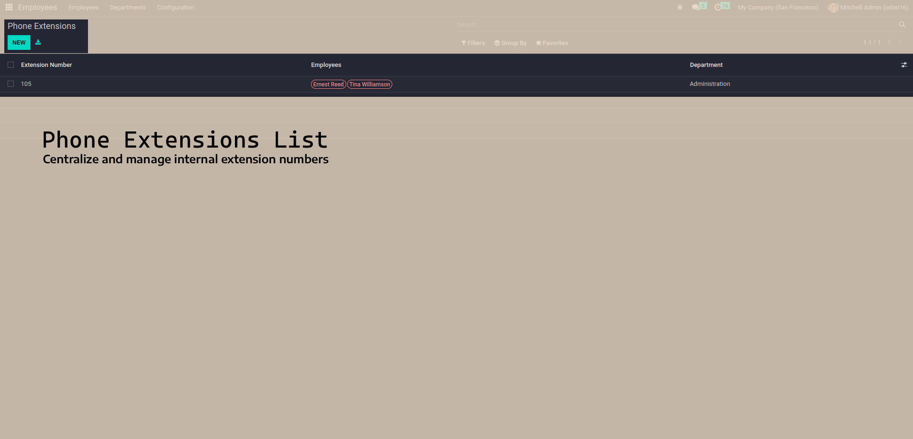

Streamline internal phone extension management for your organization with seamless employee integration.



HR Phone Extension Management is a comprehensive solution designed to streamline internal communication within your organization. This module seamlessly integrates with Odoo's HR system to provide a centralized platform for tracking and managing employee phone extensions. With this module, businesses can:

✅ Easy Installation Process:
ℹ️ Post-Installation Notes:
Navigate to Employees → Configuration → Phone Extensions and create new extension records. Each extension can be assigned to an employee and includes:
Use the powerful search and filter capabilities to quickly find extensions:
Extensions can be easily assigned and reassigned to employees:
🚀 Planned Features and Enhancements:
For support and assistance, contact us at admin@tecpill.com or call us at +973 38 07 04 04
Visit our website: www.tecpill.com